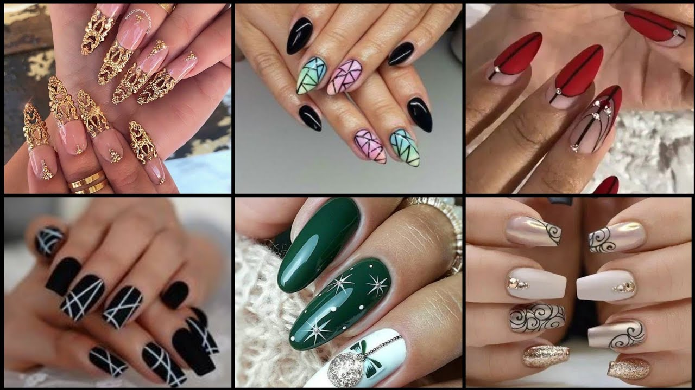
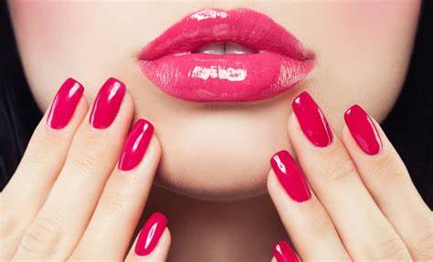
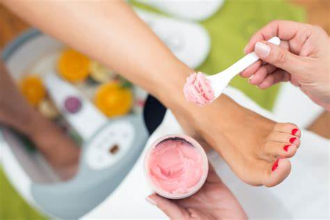
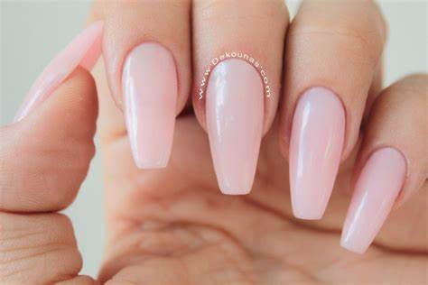
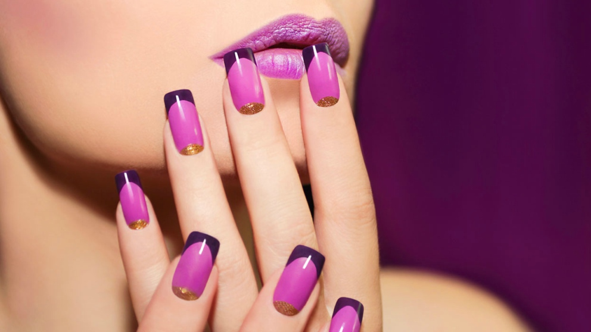

SERVICIO DE UÑAS
En Maria Antonieta Nails & Beauty, queremos que te sientas lo más a gusto posible con tus manos y pies por eso ofrecemos los tratamientos que mejor se adaptan a cada persona. Los mejores tratamientos de belleza y manicura en te están esperando

UÑAS ACRILICAS
MANICURA RUSA
PEDICURA SPA
UÑAS EN POLYGEL
MANICURA PERMANENTE
ALGUNOS TIPS
UÑAS ACRILICAS

Las uñas acrílicas son un tipo de uña postiza compuestas de prótesis de un plástico acrílico formado previamente. Este molde se adhiere a la superficie de la uña natural y dota a las uñas de un aspecto largo e impecable, además de una mayor resistencia en la manicura. Después, con la unión de líquidos y polvos acrílicos se forma una pasta para esculpir la uña artificial encima de la natural.
Los polvos y líquidos acrílicos ofrecen muy buenos resultados en las uñas que se caracterizan por ser frágiles y quebradizas, ya que las dotan de una fortaleza y resistencia instantánea
MANICURA RUSA
La manicura rusa es aquella que se hace en seco, empleando herramientas eléctricas, pequeños tornos y limas, para limpiar, acondicionar y pulir la uña de forma minuciosa.
Se diferencia de las manicuras tradicional en varios aspectos, siendo el primero el uso de instrumental eléctrico, pues en la manicura tradicional apenas se usan alicates, corta-cutículas y otras herramientas manuales.
PEDICURA SPA
Actualmente, el cuidado de los pies sigue siendo importante y, por este motivo, existen tratamientos de pedicura que tienen como objetivo limpiar y mejorar la apariencia tanto del pie como de las uñas. Sin embargo, este sector ha evolucionado cayendo en la cuenta de que, además de un cuidado superficial, nuestros pies también necesitan eliminar la tensión acumulada a lo largo de la semana, relajarse y, así, podrás reducir todo tipo de dolores de molestias.
La pedicura spa es esta rama de la pedicura que se encarga de ofrecer un tratamiento intensivo para cuidar de nuestro pie de forma profunda. No solo se centra en mejorar su apariencia sino, también, en aportarle tratamientos relajantes que mejoren el flujo sanguíneo, relajen los músculos y se renueven los tejidos.
UÑAS EN POLYGEL
Si quieres hacerte la manicura en casa y que las uñas te queden como si hubieras ido a un salón de belleza, debes conocer el polygel. Está a medio camino entre las uñas de gel y las uñas acrílicas, y es una fórmula de construcción de uñas que ofrece unos resultados fabulosos: unas uñas fuertes, ligeras y duraderas
MANICURA PERMANENTE
Es considerada un tipo de manicura que evita que las mujeres se estén pintando cada dos o tres días las uñas, porque se les daña o cae el esmalte. Se utiliza un tipo de esmalte en gel, que se aplica de forma fácil y rápida, perdura varias semanas y las uñas lucen brillantes como recién pintadas